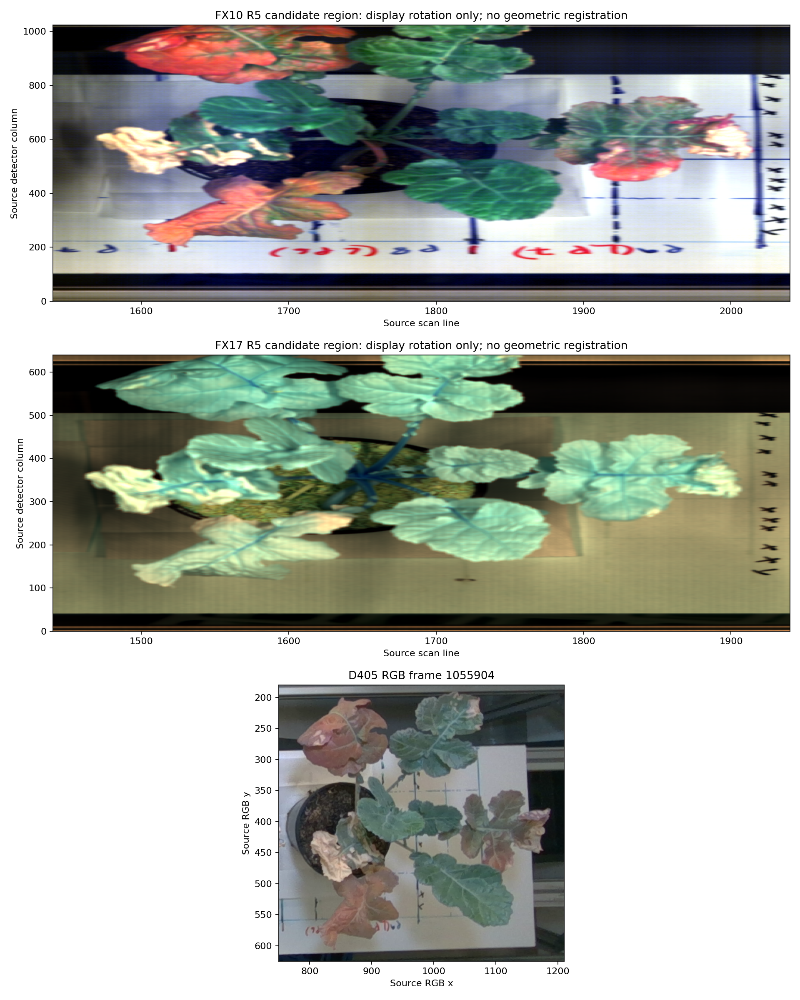
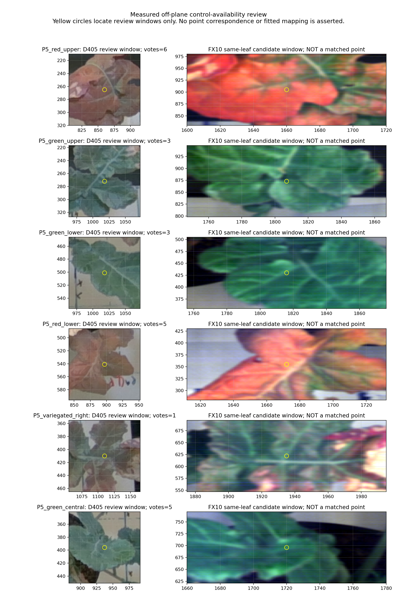

Recorded-data investigation · 7 October 2026
This investigation compared actual saved RGB and spectral appearances and measured depth at the candidate regions. Similar leaf appearance gives a useful annotation route, but does not identify a calibration point by itself. Unknown absolute scale is a separate issue: a consistent arbitrary frame could support a pixel-validated fit.
Detailed report · Measured evidence JSON · Candidate CSV · Status JSON
| Review window | Depth pair votes | Supported local pixels | Accepted control |
|---|---|---|---|
| P5_red_upper | 6 | 49/49 | No |
| P5_green_upper | 3 | 49/49 | No |
| P5_green_lower | 3 | 49/49 | No |
| P5_red_lower | 5 | 49/49 | No |
| P5_variegated_right | 1 | 0/49 | No |
| P5_green_central | 5 | 49/49 | No |
Source: D405 frame 1055904, saved multi-view recovered depth. Native RGB pixels were corrected into the undistorted depth raster. Votes and local support describe reconstruction consistency, not calibrated uncertainty. No RGB XYZ was assigned to a spectral review-window centre.

Rotated display crops only; no warp or registration. FX17 preserves useful shapes and venation, but requires its own observed point identities and validation.

Yellow circles identify review windows only. They are not matching anatomical points. At this stage, vein/lobe identity and repeat localization are not established well enough to form the required training and holdout set.
The prior 101 shared board-marker pairs support a table-plane diagnostic. Their held-out-sheet RMS was 0.56–0.81 pixels. They do not establish height-dependent leaf projection, D405-to-HSI point identity or run 002-to-003 scan-start transfer. Unmarked pot-rim extrema are view-dependent silhouettes, not stable material points.
This review accepted zero exact training controls and zero independent elevated holdouts. The existing bounded fitting API needs at least 12 noncoplanar training controls and four independent elevated holdouts, with numeric residual limits. No assumed heights or region-centre correspondences were inserted.
Recover spatial calibration and scan logs first. If unavailable, use a rigid coded target with independently measured points spread across scan length, detector width and plant-height volume. Reserve a whole elevated target or section before fitting, record line timing/start fiducials, and evaluate numeric pixel errors and visibility before assigning spectra.
Read the capture and validation specification · Download specification JSON
Earlier measured spectral results · Existing offline mapping workspace · Input/output provenance
This is a bounded evidence review, not proof that future expert annotation or recovered lab records cannot succeed. Measured DN and provisional board-normalized Q/Q0 remain distinct from calibrated reflectance and physiological claims.